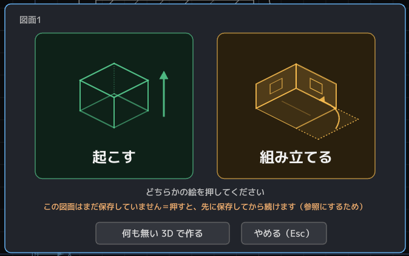

15. 立体（3DとSTL）
3D / 立体表示

小窓に 3D →Enter＝図面に高さを与えて、立体で見ます。
- 左ドラッグか矢印キー＝回す。
- 1〜5＝平面・正面・右・左・背面。0＝アイソメ。
- PageUp / PageDown＝立ち上げる高さの増減。
- Esc＝図面へ戻る（図面は無傷のままです）。
- 部屋の中でもリボンは押せます。線分・円など 2D の道具を押すと、そのまま図面へ戻って始まります（「◀ 図面へ戻る」を押さなくてよい）。保存・別名・立体・書出・一覧・教本・ヘルプは、部屋に居たまま効きます。戻す・起こすは、図面から建てた部屋でだけ効きます（STL や焼いた立体の部屋には戻す歴史も起こす下敷きも無いので、押すと図面へ戻ります）。
- 部屋の中で ⌘S（Windows は Ctrl+S）＝保存。⌘⇧S＝別名。⌘Z＝一つ戻す。保存しても部屋に居たまま、見ている向きも動きません。（積むの台から入った部屋では、リボンと保存は止まります＝台へ戻ってから）

リボン［押し出し］＝2D の図面から、押し出して 3D へ
2D の図面で、タブ「立体」の［押し出し］を押します。
- 初めての図面では「立体は 3D の一枚で作ります」と聞かれます。答えると、その図面を下敷きにした 3D の部屋へ、［起こす］を持ったまま入ります（元の 2D の図面には何も書きません）。
- 囲まれた所（四角・閉じたポリライン・円など）をクリック→マウスの上下か数字で高さ→クリックで立体になります。
- ［立体］との違い＝［立体］は手ぶらで部屋に入り、［押し出し］は押し出す道具を持って入ります。
- 何も描いていない図面では押し出せません（先に形を描いてから）。
EXT / 押し出し＝形ごとに厚みを決める
図形を選んで、小窓に EXT 1200 →Enter。
- その形だけが、高さ1200で立ち上がります。
- EXT 0 ＝厚みを外す（部屋の一律の高さに戻ります）。
- 効くのは 線・円・弧・ポリライン・楕円・スプライン・ハッチ。
- プロパティ（PR）の【厚み】の行でも打ち替えられます。厚みは平面図に現れないので、確かめる場所はここと立体の部屋です。
- 厚みは図面（DXF）に保存されます。よそのCADでも立体として開けます（規格の 39＝2.5D）。
例：壁2400・床の板12・柱3000 を一枚の図面に混ぜて、まとめて立ち上げる。厚みを持たない形だけが、PageUp / PageDown の一律の高さで動きます。
FLATTEN / 平らにする＝Z・高さ・厚みを 0 に
タブ「直す」の［平らに］（小窓なら FLATTEN）。
よそのCADから来た図面で、交点が取れない・線が浮いている時に。
- 選んでいれば、その形だけ。何も選んでいなければ「図面ぜんぶを、平らにしますか？」と、数を言ってから聞きます。
- 0 にするもの＝線・円・文字・点・配置の Z／ポリラインの高さ／厚み。
- 真下を向いた円・円弧・ポリライン・配置（鏡写しの跡）は、上から見た形はそのままで、上向きに直します。
- 触らないもの＝斜めを向いた形（平らにすると形が変わるため）・立体（見せずに預かっているもの）・ブロックの定義・部材の名札。
- ファイルは保存するまで変わりません。U ひと押しで戻せます。
- 3D の一枚（[3D]）では使いません（立体が壊れるだけのため）。
組み立てる＝平面図を土台に、立面図を模型のように置く
平面図と各方位の立面図から、家の形を組むときの道です。
何の図かは道具が推し量りません＝どこに・どう置くかは、指で決めます。
- 入口は二つ（どちらも同じ［組み立てる］の絵です）。2D の図面で、タブ「立体」→ 絵札［組み立てる］＝その図面のどこを持つかを、2D のまま指せます（下の①②）。3D の部屋のリボンの［組み立てる］＝DXF を選んで一枚足す（紙の左下を持って部屋へ入ります＝③から）。
- ① 持つ点＝図面の端点・中点・交点などを指します（Enter＝紙の左下）。
- ② 指のそばに「ここから、相対座標でずらしますか？」［このまま］か Enter で進みます。@0,-400 のように打つと、持つ点がその分ずれ、丸い印が動いて見えます。
- 部屋の左上の絵札で、［立てる］（立面図・詳細図）か［寝かせる］（2 階の平面図など）を選びます。
- ③ 置く点＝敷いた平面図の角や、立てた紙の角を指します（Enter＝原点）。立てた紙のてっぺんの角に吸い付けば、そこが 2 階の床の高さ（FL）です。
- ④ もう一度「ここから、相対座標でずらしますか？」数が二つなら床の上だけ（@500,0）、三つなら高さも（@0,0,3000）。寝かせる紙は、ここで置かれます。
- ⑤ 立てる紙は、マウスを動かした向きに立ちます（東西南北に吸い付きます）。クリックか Enter で立てます。札が「南立面（外から見た向き）」のように名乗ります。
- Esc・右クリック・U＝一段ずつ戻ります（⑤→④→③→紙を手放す）。
- 置いた紙は、右の「置いた図面」の板に並びます（「寝かせた（平面）FL 0」「立てた（南立面）」のように）。U で外せます（REDO で戻ります）。元の図面には一文字も書きません。
- 四角い家なら、板の［箱に組む］が一押しの近道です。
積む＝開いている図面を高さに積んで、立体で見る
小窓に 積む（または STACK）→Enter で開きます。
（リボンの札は置いていません＝平面図と立面図から形を組むのは、上の［組み立てる］が本筋です。2 階の平面図も［寝かせる］で積めます）
- 開いている図面（タブ）が、回せる塔に並びます。箱＝平面図（FL から上端まで）。板＝立面図（南・東・北・西）。
- 右上の「ファイルマネージャー」を押すと、開いている図面の一覧（名前・図形の数・置き方・どこから開いたか）になります。行を押して選びます（↑↓でも）。「塔で見る」で塔に戻ります。
- 箱（または一覧の行）を押して選び、下の帯で FL（その図面が置かれる高さ）を打ちます。上端は空でも構いません（自分の高さから見当をつけます）。
- 立面図なら、帯の「南・東・北・西」で向きを選びます。立面は線だけで立ちます（厚みは付けません）。
- 「立体で見る」＝全部の図面を、その置き方で重ねて立体にします。1階の平面図を FL 0、2階を FL 3000 に置けば、二階建てが立ちます。
- 【上端】を決めた図面は、帯の「高さ ○○」を押すと、その場で立ち上がります（与える高さ＝上端 − FL）。台を出て、上のタブで図面を切り替えて…という往復が要りません。例：天端を 5960 で揃え、梁のレベル 5460 を FL にすると、5960 − 5460 ＝ 500 が、そのまま梁せいになります。上端がまだ空の図面と、立面図では、この札は薄いままです（見当の数字で、勝手に立ち上げないため）。U ひと押しで戻せます（その図面のタブで）。
- 床・壁に蓋は、いままでどおり図面を見ながら（リボンの「高さ」）。
- 置き方は図面（DXF）に一緒に保存されます。（何も打っていない図面は、今までどおり何も書きません）
- Esc か「◀ 図面へ戻る」＝台を閉じます。
立体は、3D の一枚（[3D]）で作ります
- 厚み・下端・部材の名札を書く道具（高さ・部材にする・壁に蓋・部材の板・EXT・プロパティの高さ／下端）は、[3D] の一枚の中でだけ効きます。2D の図面（設計図）には、一文字も書きません。
- 2D の図面のタブでそれらを押すと、一押しの問いが出ます＝「3D の一枚を立ち上げる」を押すと、[3D]○○.dxf の一枚が生まれ（無ければ）、その図面が平面・FL 0 のテンプレート（参照）として置かれ、［起こす］を持ったまま 3D の部屋へ入ります。まだ保存していない図面は、先に保存します。
- 立体の保存は [3D] の一枚のタブで ⌘S（元の図面は、そのままです）。
- 3D の部屋で、起こした立体の天端を押すと、その面が作業平面になります。もう一度その上の囲まれた所を押すと、その高さの階の図面から囲いを探して起こします。
高さ＝平面図から、壁と柱を一括で立ち上げる
リボン「立体」の「高さ」を押すと、下に帯が出ます（[3D] の一枚のタブで）。（3D の部屋の［起こす］＝押した所を引いて立体にする道具とは、別のものです）
- 【高さ】に 2400 のように打ち、「図面ぜんぶ」を押します。
- 実線で描いた壁と柱（線・ポリライン・円・弧・ハッチ）にまとめて高さが付き、そのまま立体で見えます。
- 通り芯などの補助線（一点鎖線・破線）と、符号の丸（中に字がある円）は見送ります＝画層名は見ません。
- 立体では、見送ったものは床に平らに寝ています。右上の「補助線：表示／非表示」で、見せる・消すを選べます。
- 起こした壁と柱は、陰影つきの面で見えます（手前の壁が奥を隠します）。柱や一体化した壁の輪郭のように、ぐるりと閉じた形には天端も付きます。二本線で描いた壁は、そのままでは二枚の衝立に見えます（上が開いたまま）＝次の「壁に蓋」。
- 「壁に蓋」＝二本線の壁の帯（二本の実線が 100〜600 の間隔で並び、両端が柱や別の壁で閉じている所）を認識して、閉じたポリライン＋【高さ】の厚みにします。厚みのある壁として立ち、天端が乗ります。認識した壁厚（150＝4・200＝3 のように）を履歴で名乗ります。柱や一体化した壁は作り直しません。U ひと押しで戻せます。
- 一部だけなら、選んでから「選んだもの」。
- 「部材にする」＝一つずつ立ち上げる道（自動で判定しません）。帯の【部材 ▶】を押して 柱・壁・梁・床・その他 を選び、欄を打ってから押します。欄の顔は部材で変わります＝柱・壁は【下端】【高さ】、梁は【天端】【せい】（下端＝天端−せい は道具が計算）、床は【床厚】。閉じた形を選んでから押すと、その形がそのまま部材に。何も選んでいなければ、形の内側を一回クリック（ハッチと同じ作法）＝その輪郭が閉じたポリライン＋下端＋高さ＋名札になります。通り芯や符号は壁に数えません。中の島（柱）は輪郭に入れません。U ひと押しで戻せます。名札・下端・高さは、プロパティの板（PR）でも一つずつ直せます。小窓で「部材 梁」と打つと、帯を開いて部材を梁にします。
- 「部材の板」＝この図面の部材の一覧（リボンの「部材の板」／小窓 MEMBERS）。柱・壁・梁・床…が何個あるか、どれがまだ名札なしかが一目で分かります。行を押すと図面でその形が光り、図面で選ぶと行が光ります。選んだものは板の中で【部材 ▶】（押すたび次へ）、【下端】【高さ】をその場で打ち替え、「解除」で名札・下端・高さを一つずつ外せます（「高さを外す」は図面ぜんぶ）。「立体で見る」で、そのまま部材だけが起きた姿を確かめられます。
- 「高さを外す」＝ぜんぶ平面図へ戻します（U でも戻ります）。
- 小窓で、何も選ばずに EXT 2400 と打っても同じです。
- 部品配置（ブロック）は、帯の「ブロックにも高さ」で立ちます（定義に高さを与えます＝その定義を使う配置ぜんぶが立ちます＝同じ部材は同じ形）。一回きりの部材なら、X で分解してからでも。
3Dで起こす＝囲まれた所を押して、マウスの上下か数字で高さを決める
3D の部屋で、リボンの［起こす］（上向きの矢印の絵）を持ちます。
（道具を選ぶのはリボン＝下の帯は、いま持っている道具の欄と案内を出します）
- 図面が床に寝た姿になります。下敷きの、囲まれた所（柱の四角・壁の帯・部屋の内側など）を一回クリックすると、その形が琥珀に光ります。
- そのままマウスを上下すると、琥珀の立体が伸び縮みします。指のそばに「高さ 2400」と、部材・下端〜天端・刻みが出ます。
- もう一度クリックすると、その高さで立体が生まれます（閉じたポリライン＋下端＋高さ＋名札＝2D の「部材にする」と同じ形）。
- 刻み＝画面の細かさに合わせたキリのいい数（寄れば細かく）。出ている数字が、そのまま高さになります。
- 数字でも打てます＝引いている最中に 2400 と打つと、指のそばの札が「高さ 2400」に替わり、Enter でその高さの立体が生まれます。打ち始めたら、打った数が勝ちます（マウスを動かしても変わりません）。2400+150 のような式も効きます。BackSpace で全部消すと、マウスへ戻ります。（引いている最中の数字は高さの字です＝視点の 1〜5・0 は効きません）
- 中に囲いがある所（壁の帯など）は、穴のまま起きます。
- 部材の名札は、2D の「高さ」の帯でいま選んでいるもの（柱など）。
- 起こしたら、道具は棚へ戻ります（選ぶ＝待機）。続けるなら、もう一度［起こす］。3D の道具はみな同じです（使い終えたら棚へ・置けなかった時だけ持ったまま）。※複製だけは続けて置けます（2D の複製と同じ）。終わりは Esc か右クリック。
- Esc か右クリック＝一段ずつ戻ります（引くのをやめる→道具を手放す）。U＝一つ戻す（起こした立体を消せます）。リボンの［戻す］・⌘Z も同じです。
- 真上から見ていると、マウスでは高さを引けません。右ドラッグで少し傾けてください（数字を打って Enter なら、真上のままでも起こせます）。
- カーソルは、押すと決まる面の上に寝た十字です（X・Y・Z の字は、原点に立つ矢印の標と同じ色）。色・大きさ・太さは 2D の十字の設定のまま。
ろくろ＝断面を軸で回して、お椀・皿・花瓶・脚などの形にする
3D の部屋で、リボンの［ろくろ］（軸のまわりを矢が回る絵）を持ちます。
（小窓に REVOLVE と打っても同じ。2D の図面のタブで打つと、[3D] の一枚を立ち上げる問いが出ます）
- 2D で、回したい形の断面（お椀なら、その片側の断面）を閉じた形で描いておきます。円弧のあるポリラインでも、バラバラの線でも構いません。軸にする線（中心線）も一本引いておきます。
- 部屋で、断面の内側を一回クリック＝断面が琥珀に光ります。
- 次に、軸にする線をクリック＝回った形が薄い琥珀で見えます。立体は、断面のいちばん下が z=0・軸の線の上に立ちます（軸をどこから引いても同じです）。
- 分割（回転の細かさ）は帯の札［粗い 12］［ふつう 36］［なめらか 72］か、数字を打って Enter。細かいほど滑らかで、三角形が増えます（枚数は帯が言います）。
- クリックか Enter で置きます。図面に住むのは断面のポリラインと軸の線だけ（荷札で結んでいます）＝断面を直せば形も変わります。回した形はリボンの［書出］でそのまま焼けます。
- 断面が軸をまたいでいると回せません（断面は軸の片側に置いてください）。
- Esc か右クリック＝一段ずつ戻ります（軸を選び直す→断面を選び直す→道具を手放す）。U も同じです。
屋根＝建物の上に、切妻・寄棟・方形・片流れの屋根を載せる
3D の部屋（[3D] の一枚＝器の部屋）で、リボン「作成」の［屋根］を持ちます。
（小窓に ROOF と打っても同じ。2D の図面のタブで打つと、[3D] の一枚を立ち上げる問いが出ます）
- 屋根を載せる建物（壁や箱）を一回クリック＝建物の外面が琥珀の太枠で光り、載る屋根が薄い琥珀で見えます。そのまま空いた所をクリックすると屋根が置かれます。建物に指を乗せると、脇に「ここを押す」の札が出ます。
- 帯の一段目＝種類の札［切妻｜寄棟｜方形｜片流れ］・［妻の壁 つける｜つけない］・勾配の単位［寸｜度｜％］。寄棟と方形に妻はありません（妻の壁の札は暗くなり、押すと理由を言います）。方形は縦と横が同じ長さの建物向けです（長い建物には寄棟を選びます）。
- 帯の二段目＝数字の欄六つ。高さ（軒先）・壁の厚み・屋根の厚み・短辺のせり出し・長辺のせり出し・勾配。高さと壁の厚みは押した建物から読みます（読めた欄に緑の札）。打った数が勝ちます（次に建物を押しても上書きしません）。クリックで欄を選び、打って Enter で確定して次の欄へ。式（300+150）も打てます。
- 切妻は、棟に直角な辺が「妻」です。既定は長い辺と平行に棟が走ります。妻を変えたいときは、指を外面の別の辺へ近づけて（辺が赤く光ります）クリック。片流れは、同じ操作で「高い側」の辺を指し直せます。
- 置いた屋根は、図面の上では軒先の輪郭のポリラインと荷札だけです。面・棟・妻壁は部屋を建てるたびに焼き直します。元の図面には一文字も書きません。
- Esc か U＝押した建物を外します（もう一度で道具を手放す）。置いた屋根は［戻す］か U で消せます。
スライス＝立体を、糸で切り分ける（SL）
3D の部屋で、粘土を糸で切るように、立体を切り分けます。
- ①切りたい立体を選び、リボン「修正」の［スライス］（小窓に SL か SLICE でも）。
- ②立体の面の上で、二点をクリック＝糸（3D スナップ点に吸い付きます）。
- ③残す側をクリック（薄く見えている側が消えます）。両方残すなら Enter か右クリック。
- U・Esc＝一点目から打ち直し。切ったあとは U で戻せます。
- 切れない時は、理由を言って断ります（器は変わりません）。
ワイヤーソー＝立体に、ワイヤーソーを据える（WS）
3D の部屋（[3D] の一枚＝器の部屋）で、箱や柱を切る段取りを、機械ごと見る道具です。
据える所から、切り終わりまでを見られます。数字は全部【試算】＝仮置きです。
- ①切りたい立体を選び、リボン「修正」の［ワイヤーソー］（小窓に WS でも同じ）
- ②立体の面の上で、二点をクリック＝刃（［スライス］と同じ手）・側面に水平な二点＝輪切り ・天端に二点＝縦に割る・斜めの刃は、理由を言って断ります
- ③その切断面にワイヤーソーが現れ、セッティングの板が開きます・① 切る所＝切断面の幅 × 奥行き・面積・機械の能力（6 m²）に対する割合・② 機械＝［汎用機］［弓張］（押すと、その場で機械が替わります）・③ 据える側＝切断面の四つの辺（東西南北・上下の名前で並びます）最初は、据えられる辺のうち、いちばん短い辺です。辺が機械の横バー（2,000）より長い時は［端に揃える］［真ん中］［反対の端に揃える］長い辺の真ん中は角が 4 つになり、負荷が 100% を超えると赤で名乗ります（端に揃えると減ります）・据える向き（床に寝かせる・縦・横）は、刃と辺から道具が決めて名乗ります・下の辺（機械が床の側になる）には据えられません。押すと理由を言います
- 床から 650 より低い輪切りは、機械を裏返して据えます（金物とモーターが上・ワイヤーの面が下）。道具が刃の高さから決めて、板と履歴で名乗ります。裏返した時の現場の決まりも、板が言います：・ベースの四隅のレベルボルトで角度を付ける（尻上げ）ので、刃は若干斜めになります（傾きは、まだ計算していません）・防護カバーを外します → 防弾ネット（ベクトランシートなど）と遠隔の操作が必須です・ベースと補助のアンカーは、切断面より上の、躯体の前面に打ちます床から 70 より低い刃は、裏返しても金物が床に当たるので、理由を言って断ります（70 は【仮】）。
- 機械は、レールの根元のベース（アンカー M16・切る線から 250 前後）で躯体に付きます。赤い丸＝そのアンカー。縦バーのある機械（汎用機）は、縦バーの根元を補助のアンカー（M12 か W1/2）で同じ面に止めます。琥珀の丸＝補助。横バー（前面のバー）にアンカーは付けません（プーリーを並べる場所です）。丸に指を乗せると、切断面からの離れが出ます。レールの後ろの突っ張り棒は、絵だけです（無くてもよい物）。締め付けは度々点検します。機材は 170〜200 kg あります。アンカーが完全に効いている事が前提です（躯体が悪い時はケミカルアンカー・厳しければ別の面で）。
- ［巻きを増やすプーリー：あり／なし］＝メインプーリーの隣の横バーにガイドを一つ足して、巻きを半周（180°）にします。既定は「あり」です。「なし」にすると巻きが浅くなり、グリップの余裕が落ちます。板に「メインプーリーの巻き ○°」が出ます。余裕が 1 を切ると滑ります：空転が増えて切る速さが落ち、ゴムが焼けて、替えのラバーが無ければ工事が止まります（数字は試算）。横バーが短くてプーリーが入らない幅では、道具が自動で外して、そう名乗ります。
- 縦の刃で、切断面の下の辺が床に着いている時は、コアボーリング（φ50）の穴を水色の点線で見せます。
- ［刃を決め直す］＝糸を張り直します。［外す］＝ワイヤーソーを外します（立体はそのまま）。
- 板は×で閉じても、機械は据えたままです。もう一度開くには、立体を選んで［ワイヤーソー］。
- 設定は [3D] の一枚に保存されます（開き直すと、同じ機械が現れます）。U・［戻す］で一手ずつ戻ります。
- 立体を動かす・回すと、機械も一緒についてきます。
- 切る（数字はどれも試算です）・④ 切る相手＝RC（主筋 D32・200 間隔・かぶり 70 の仮定）か、無筋・⑤ ワイヤーの長さ＝［お任せ］は、行き止まらず、掛け替えが一番少ない長さを道具が選びます（同じなら短い方）。［− 0.5 m］［＋ 0.5 m］で手でも決められます。掛け替えの回数の見込みが、すぐ出ます。・回転の向き＝既定は［逆転（左回り）］＝縦バーの側が引きになる向き（現場の決まり）。［正転（右回り）］は縦バーの側が送りになり、たるむ・外れる・干渉しやすい向きです（板が名乗ります）。・［切る］＝メインプーリーがバックして、切断面の琥珀の面（まだ切れていない所）が縮んでいきます。行き止まりで掛け替えます（履歴が名乗ります）。［止める］［最初から］と、速さ（60・600・1800 倍）。・切り終わると、立体が二つに分かれます（U で、据えた姿ごと戻せます）。・切っている途中の姿は、図面には保存しません（開き直すと、切り始めの姿からです）。
STL / 立体書出（3Dプリンタへ）
小窓に STL →Enter。
- 立体になるのは「ぐるりと閉じた輪郭」だけです（四角・円・ハッチの境界など）。
- 厚みは PageUp / PageDown で決めて、姿を見てからリボンの［書出］をもう一度（部屋の中では、その場で保存先を聞きます）。
- EXT で形ごとに厚みを与えてあれば、その厚みで焼かれます（厚みを持たない形だけが、一律の高さになります）。
- 出てきたSTLは Bambu Studio・Cura・PrusaSlicer 等でそのまま開けます。
よそのSTLを見る
⌘O で .stl を開くと、立体の部屋で回して見られます。
教本を直せば、この手引きも同じ日に直ります。
絵は Windows 版の画面です（2026年11月に撮り直しました）。Mac 版では、Ctrl が ⌘、Alt が ⌥ になります。